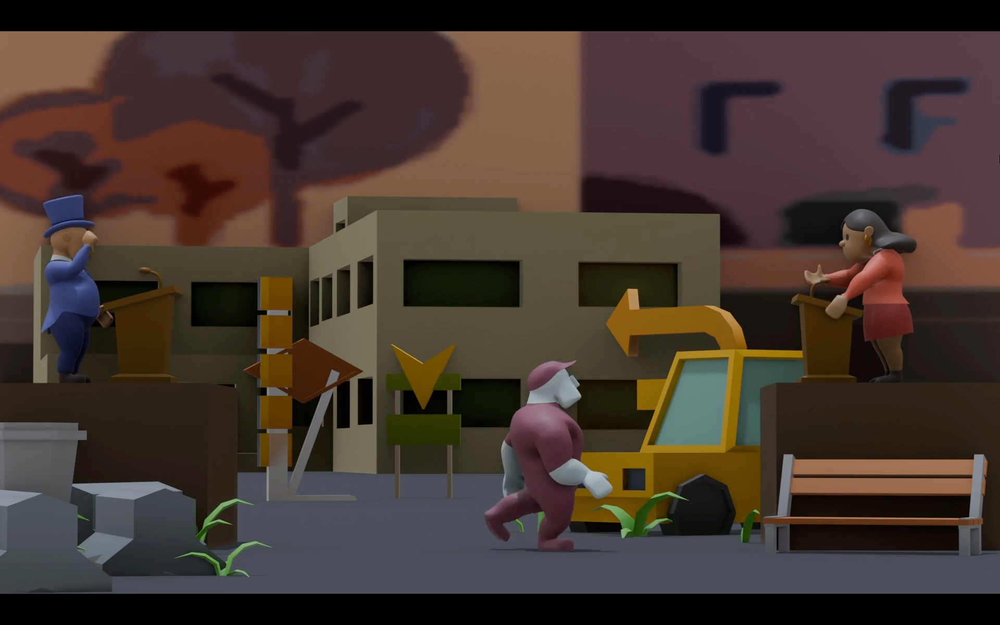

The Swing State
The Swing State is a 1v1 party game where two rival politicians compete to win over the most voters. This game was made during a two-day-long game jam organized by our school (Howest - Digital Arts and Entertainment). I worked on a team with one other developer, four artists and an animator. Out of 30 entries, our game placed third overall.
Personal Contribution
Technologies Used
Unity 6000 with C#
Visual Studio as IDE
Github for version control and collaboration